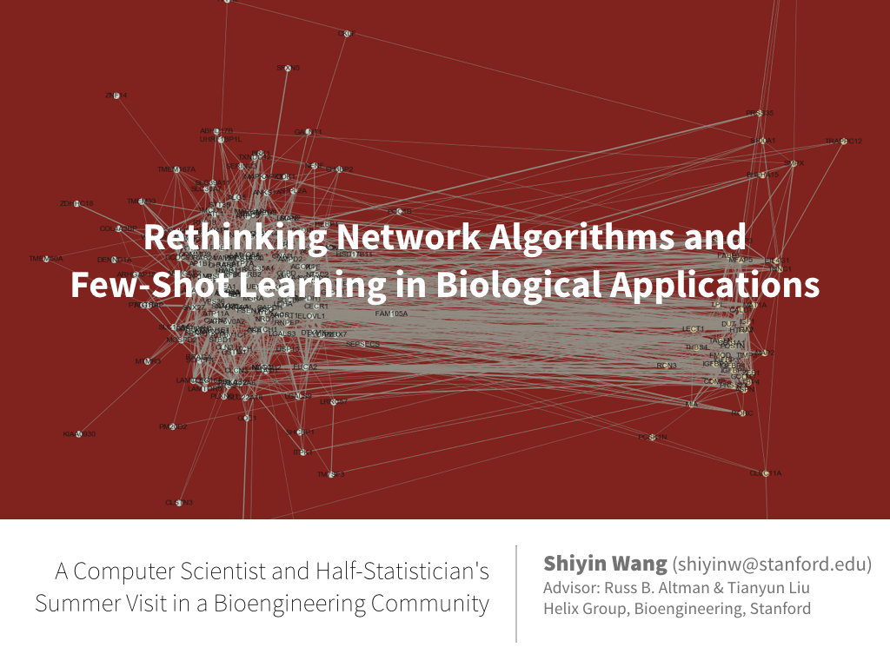
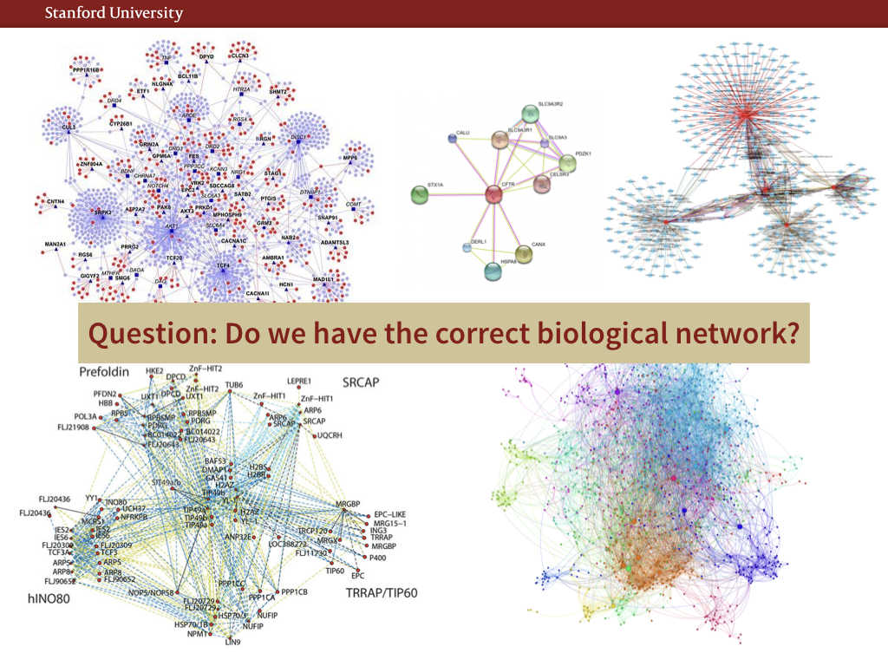
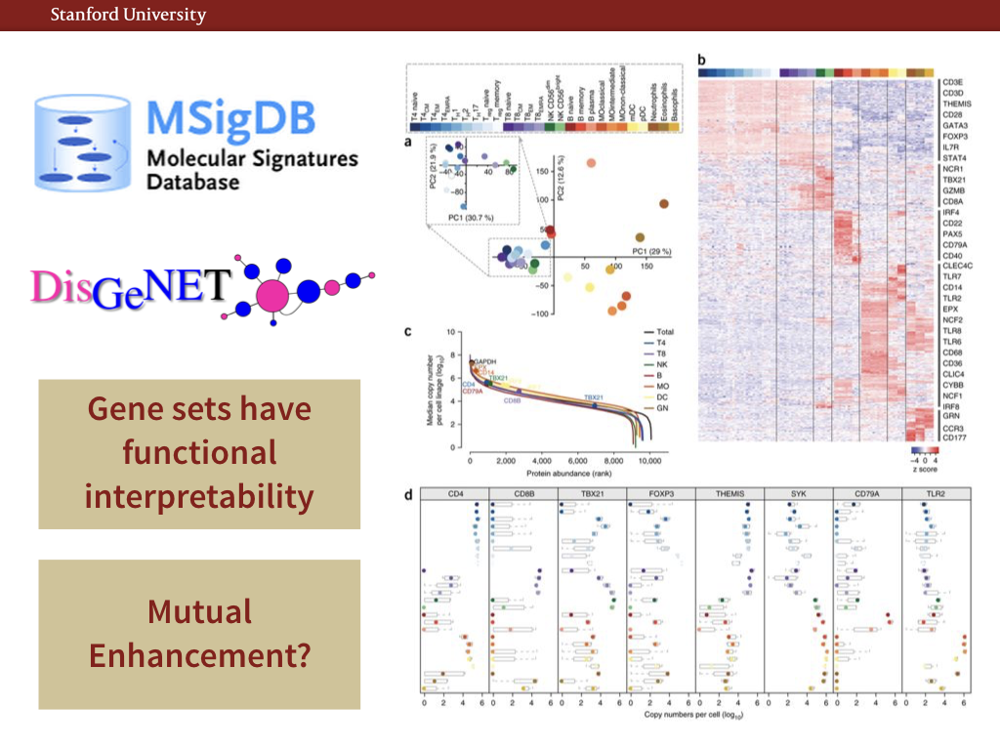
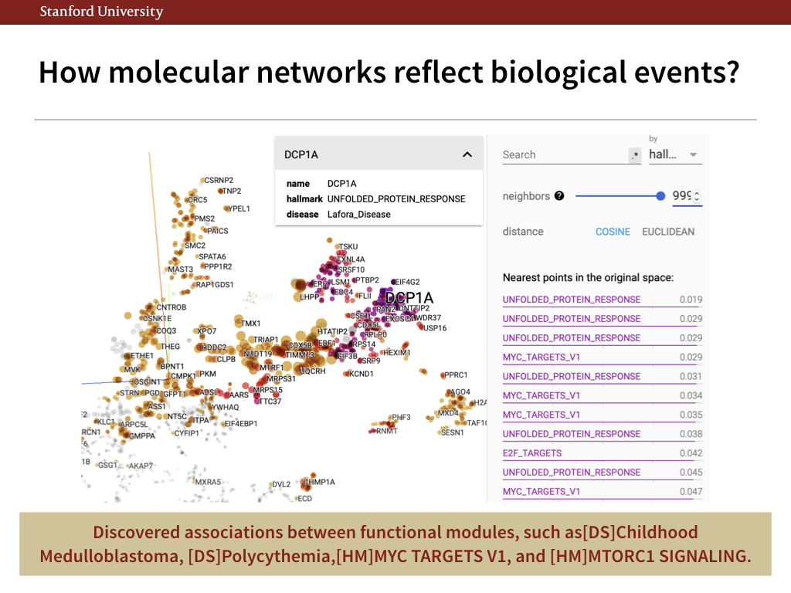
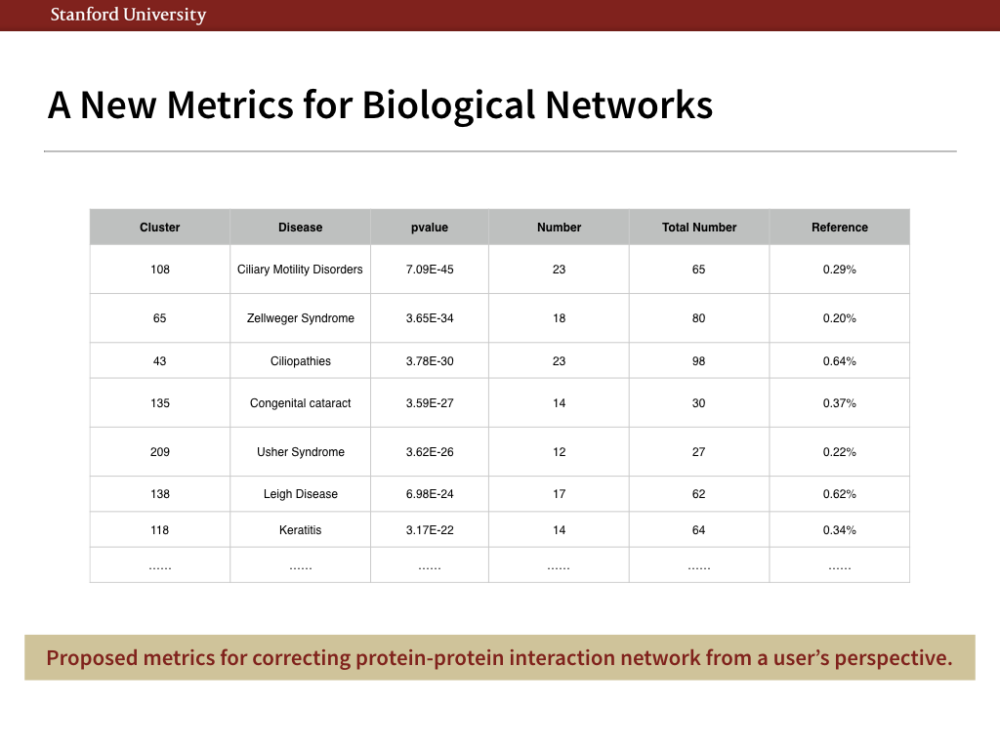
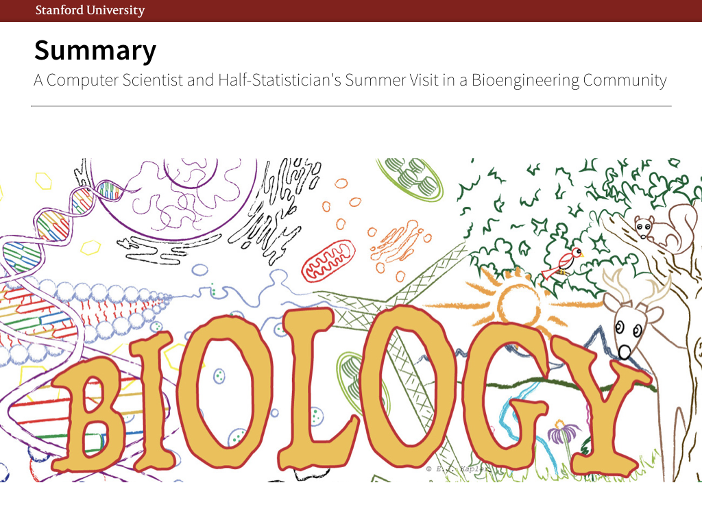

<div id="ajax-page" class="ajax-page-content">
    <div class="ajax-page-wrapper">
        <div class="ajax-page-nav">
            <!--<div class="nav-item ajax-page-prev-next">-->
                <!--<a class="ajax-page-load" href="stanford.html"><i class="zmdi zmdi-chevron-left"></i></a>-->
                <!--<a class="ajax-page-load" href="stanford.html"><i class="zmdi zmdi-chevron-right"></i></a>-->
            <!--</div>-->
            <div class="nav-item ajax-page-close-button">
                <a id="ajax-page-close-button" href="#"><i class="zmdi zmdi-close"></i></a>
            </div>
        </div>

        <div class="ajax-page-title">
            <h1>Can Higher-Level Molecular Networks Explain Biology?  A User’s Perspective</h1>
        </div>

        <div class="row">
            <div class="col-sm-7 col-md-7 portfolio-block">
                <div class="owl-carousel portfolio-page-carousel">
                    <div class="item">
                        
                    </div>
                    <div class="item">
                        
                    </div>
                    <div class="item">
                        
                    </div>
                    <div class="item">
                        
                    </div>
                    <div class="item">
                        
                    </div>
                    <div class="item">
                        
                    </div>
                </div>

                <!--
                <div class="portfolio-page-image">
                    
                </div>
                -->

                <script type="text/javascript">
                    jQuery(document).ready(function($){

                        $('.portfolio-page-carousel').owlCarousel({
                            smartSpeed:1200,
                            items: 1,
                            loop: true,
                            dots: true,
                            nav: true,
                            navText: false,
                            margin: 10
                        });

                    });
                </script>
            </div>

            <div class="col-sm-5 col-md-5 portfolio-block">
                <!-- Project Description -->
                <div class="block-title">
                    <h3>Description</h3>
                </div>
                <ul class="project-general-info">
                    <li><p><i class="fa fa-user"></i>Shiyin Wang, Tianyun Liu, and Russ B. Altman</p></li>
                    <li><p><i class="fa fa-map"></i>Helix Group, Stanford University</p></li>
                    <!--<li><p><i class="fa fa-globe"></i> <a href="#" target="_blank">www.project-site.com</a></p></li>-->
                    <li><p><i class="fa fa-calendar"></i>2019 Jul ~ 2019 Aug</p></li>
                </ul>

                <p class="text-justify">With the repaid development of big data technologies, biological datasets, such as PubMed, GoTerms, ArrayExpress, Protein Interaction Network and PubTator, are favored by researchers for they preserve high-quality, easy-access and structured data without worry about privacy issue.
                    Some researchers use the model performance on Protein-Protein interaction network to back up the innovation of their algorithmic innovations and argue that they can also apply in the social network analysis. Some researchers develop unsupervised text mining algorithms on PubMed abstracts and imply that they can help to find important entities in mass media.
                    How about the real application in the biological domain? Our lab had a network science grant years ago. When we look back into the real world application, we find that those fancy techniques on the protein-protein interaction networks(PPI) do not provide enough supervision to the biologists. The reason is that the network is noisy and lack of interpretability. To improve the usability, we propose to build higher-level molecular networks which aggregate functionally similar genes to form a higher-level gene sets.
                </p>
                <!-- /Project Description -->

                <!-- Technology -->
                <div class="tags-block">
                    <!--<div class="block-title">-->
                        <!--<h3>Technology</h3>-->
                    <!--</div>-->
                    <ul class="tags">
                        <li><a>PPI Network</a></li>
                        <li><a>Embedding</a></li>
                        <li><a>Computational Biology</a></li>
                        <li><a>Statistics</a></li>
                    </ul>
                </div>
                <!-- /Technology -->

                <!-- Share Buttons -->
                <div class="btn-group share-buttons">
                    <div class="block-title">
                        <h3>Share</h3>
                    </div>
                    <a href="https://www.facebook.com/sharer/sharer.php?u=https://shiyinw.github.io/" target="_blank" class="btn"><i class="fa fa-facebook"></i> </a>
                    <a href="http://www.twitter.com/share?url=https://shiyinw.github.io/" target="_blank" class="btn"><i class="fa fa-twitter"></i> </a>
                </div>
                <!-- /Share Buttons -->
            </div>
        </div>
    </div>
</div>
